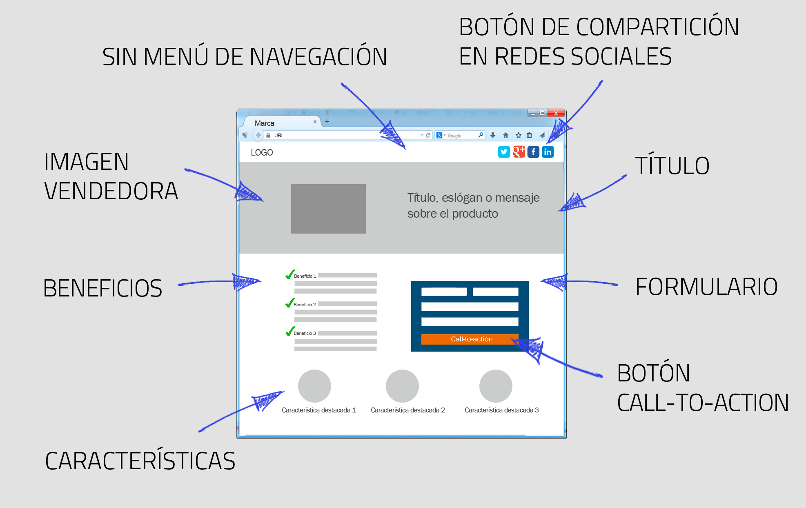
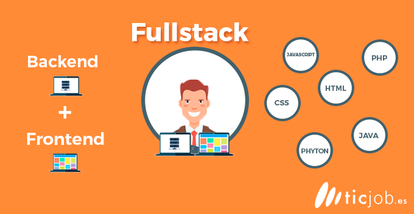

Modelo DOM:
El modelo de objetos del documneto (DOM) es una interfaz de programación de aplicaciones (API) para documentos validos HTML y bien construidos XML. Los programadores pueden construir documentos, navegar por su estructura, y añadir, modificar, o eliminiar elementos y contenido. Se puede acceder a cualquier cosa que se encuentre en un documento HTML o XML, modificando, borrando o añadiendo utilizando el Modelo de Objetos del Documento.
Estructura del modelo DOM
Dentro del mundo de la programación web, el modelo DOM especifica interfaces que pueden utilizarse para manipular documentos XML o HTML. En un futuro, se prevé que el plan para la especificación del modelo DOM será proporcionar:
- Un modelo de estructura para el subconjunto interno y el subconjunto externo.
- Validación contra un esquema.
- Control para representar documentos por medio de hojas de estilo.
- Control de acceso.
- Seguridad de hilos de proceso o threads.
- Eventos.

¿Qué es Landing Page?
Podemos definir una landing page como: una página web preliminar o pagina de aterrizaje donde queremos destacar algo en especial, ya sea un producto, o alguna novedad o promoción de un producto. Se utilizan para todo lo que es SEM (search engine marketing), más conocido como los anuncios de Google Ads. La gran ventaja que ofrecen las landing pages es la capacidad de dirigir al usuario a un sitio en el que se le provee de la información relevante y necesaria para concretar la compra de un producto o servicio, en vez de a la página web de la empresa.
Automatizadores del desarrollo web
Actualmente, en el ecosistema Javascript (o en el mundo del desarrollo web en general), es muy común utilizar estos automatizadores para, entre otras cosas, agilizar el proceso de creación de una aplicación web con unos pocos comandos, realizando de forma automática todas esas tareas tediosas y repetitivas, alcanzando nuestro objetivo de forma más rápida y con una mejor experiencia de desarrollador. La automatización consiste en usar la tecnología para realizar tareas casi sin necesidad de las personas. Permite agilizar los procesos, ampliar los entornos y crear flujos de trabajo de integración, distribución e implementación continuas (CI/CD). Hay muchos tipos de automatización, como la automatización de la TI, la automatización empresarial, la automatización robótica de los procesos, la automatización industrial, la inteligencia artificial, el aprendizaje automático y el aprendizaje profundo.
automatización de DevOps:
La automatización de DevOps consiste en incorporar las tecnologías que ejecutan tareas con poca intervención humana en los procesos que facilitan los ciclos de retroalimentación entre los equipos de operaciones y los de desarrollo, para implementar las actualizaciones constantes de las aplicaciones en la producción con mayor rapidez.
¿Qué son la integración y la distribución continuas (CI/CD)?:
La CI/CD es un método para distribuir las aplicaciones a los clientes con frecuencia mediante el uso de la automatización en las etapas del desarrollo de aplicaciones. Los principales conceptos que se le atribuyen son la integración, la distribución y la implementación continuas. Se trata de una solución para los problemas que puede generar la integración del código nuevo para los equipos de desarrollo y de operaciones (también conocida como "el infierno de la integración"). En concreto, el proceso de integración y distribución continuas incorpora la automatización y la supervisión permanentes en todo el ciclo de vida de las aplicaciones, desde las etapas de integración y prueba hasta las de distribución e implementación. Este conjunto de prácticas se conoce como "canales de CI/CD" y cuenta con el respaldo de los equipos de desarrollo y de operaciones que trabajan en conjunto de manera ágil, con un enfoque de DevOps o de ingeniería de confiabilidad del sitio (SRE).
¿Para mi que es un FULLSTACK?
Un desarrollador full stack, es alguien que tiene conocimientos tanto de la parte del frontend como del backend, domina ambas partes y tiene conocimientos de varios frameworks para poder terminar de dominar el frontend y el backend de forma que para la empresa en la que trabaje o si es freelancer, no sea un problema los conocimientos de esta persona ya que tiene varios frameworks dominados
